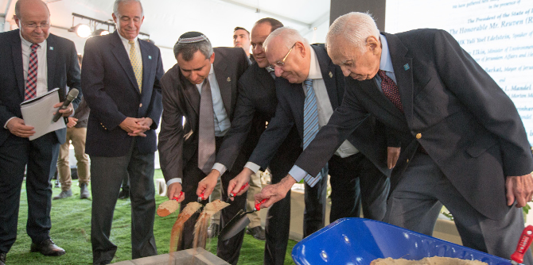

"טקס הנחת אבן פינה לבניין החדש של קרן מנדל כאן בירושלים הוא יום חג. ביום זה אנו מביאים לידי ביטוי את החיבור העמוק בין ירושלים, לבה הפועם של מדינת ישראל ושל העם היהודי, לקרן ג'ק, ג'וזף ומורטון מנדל, קרן שהיא חממה לאיכות, למצוינות, למנהיגות", אמר הנשיא ריבלין. "בחצי יובל לפעילותה הצמיחה קרן מנדל לארצנו דור של מנהיגים ויזמים, יזמים חינוכיים וחברתיים מכל קצווי החברה הישראלית. הבניין החדש עתיד להמשיך ולבסס את פעילותה המבורכת של הקרן החשובה הזאת", אמר.
הבניין החדש של קרן מנדל ייבנה בכניסה לגן הבוטני האוניברסיטאי בירושלים, סמוך לקמפוס גבעת רם, ובנייתו תארך כשנתיים.

"קרן מנדל לא הייתה יכולה לבטא טוב יותר את המחויבות שלה למען המדינה ולמען ערכיה מאשר להקים בית בירושלים, בירת ישראל, במקום הזה שבו אנו ניצבים עכשיו. לבנו מלא גאווה ושמחה על שהגענו ליום הזה", אמר פרופ' יהודה ריינהרץ, נשיא הקרן. "את עיקר הברכה היום אני שולח באירוע זה למר מורטון מנדל, איש חזון ומעש, יוזם ומיישם, ציוני אמיתי שאוהב את מדינת ישראל ומחויב לה".
"אני רואה כאן הרבה מאוד פנים מוכרות של אנשים נפלאים שקרן מנדל נגעה בהם בשלבים השונים של החיים שלהם ונתנה להם דחיפה עצומה, ויצאו מזה הרבה דברים חשובים למדינת ישראל ולעולם היהודי כולו", אמר השר אלקין. "תודה רבה לכם, אנשי קרן מנדל, על כל הדברים המדהימים שעשיתם, אבל עוד יותר חשוב, ובשם הממשלה אני רוצה להודות לכם, על כל הדברים הנפלאים למדינת ישראל ולעם היהודי כולו שעוד תעשו. אנחנו גאים להיות השותף שלכם ביוזמה היפה של הקמת המבנה הזה".
ראש עיריית ירושלים,
ניר ברקת, בירך בדבריו את יו"ר הקרן, מורטון מנדל: "הקרן שתשכון בבניין זה תפעל עוד שנים רבות. אינך חושב רק על היום, אתה חושב לטווח ארוך מאוד, ובמובנים רבים מאוד אתה מודל לחיקוי לכולנו. אני רוצה להודות לך על היחס החם כלפיי באופן אישי, כראש העיר, וכלפי העיר ירושלים".
טקס הנחת אבן הפינה לבניין מנדל החדש בירושלים
מר מורטון מנדל, יו"ר קרן מנדל, תיאר בתחילת דבריו את משמעות היום בעבורו. הוא הביע את הערכתו על התודות ששמע מכל הנוכחים וסיפר שלפני שנים רבות חלם להפוך את העולם למקום טוב יותר – בהשראת אמו, שלימדה אותו ואת אחיו ש"על כל סנט שתיתנו לצדקה, תקבלו דולר בתמורה". לדבריו, כך בדיוק היה.
מר מנדל ציין שאמנם קרן מנדל התמקדה בראשית דרכה בארצות הברית, אך עד מהרה הרחיבה את פעילותה גם לישראל, ושגם הוא, כמו הנשיא ריבלין, רואה עצמו ירושלמי. בסיום דבריו פנה לבוגרים: "אתם, בוגרי התוכניות, עושים את העבודה עבורי... והעבודה שאתם עושים מזהירה". מר מנדל הביע את תקוותו שהבניין החדש, המבטא את מחויבותה ארוכת הטווח של קרן מנדל לישראל ולירושלים, "יגשים את החלומות והתקוות שאנו תולים בו".
"כמי שהיה עד לכל הפעילויות של קרן מנדל", אמר יו"ר הכנסת אדלשטיין, בעצמו בוגר תכנית עמיתי ירושלים של קרן מנדל, "אני כאן מתוך ביטחון מלא שלא מדובר רק בטקס יפה של הנחת אבן פינה אלא בהזנקה של אחד הפרויקטים היפים והחשובים לנו כמדינת ישראל , לחברה שלנו, לחינוך שלנו ועוד לאלף ואחד דברים", אמר. "תודה רבה על מה שעשית ועל מה שעוד תעשה במשך שנים".
בטקס, שהנחה מנכ"ל קרן מנדל-ישראל משה ויגדור, נכחו גם יו"ר האופוזיציה יצחק הרצוג, נשיאי האוניברסיטה העברית בירושלים בעבר ובהווה, עמיתי מנדל, בוגרים, חברי הסגל והעובדים.
{kind=link}